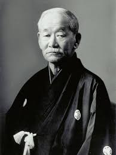
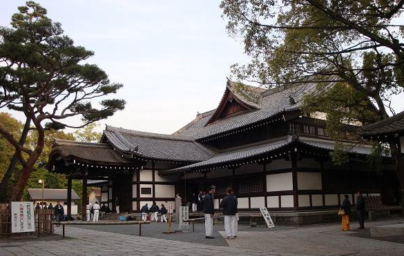

Džudo je nastao pre dva veka, tačnije 1882. godine. Osnovan je u malom budističkom hramu Eishoji u Japanu. Osnivač Jigoro Kano izučavao je razne škole džiudžicu-a, prvensteno Tenshin shinyo ryu i Kito ryu jiu jitsu, uzimajući samo ono najbolje iz svake škole, dok je nepotrebno izbacivao. Kano je bio sitnije građe, što ga je navelo na razmišljanje kako osoba njegove građe može savladati jače i krupnije protivnike koristeći isključivo znanje i tehniku. Jigoro kano bio je vizionar, primetio je da borilačke veštine polako gube svoju popularnost zbog izuzetno lošeg pristupa na treninzima usled kojih dolazi čak i do smrtnih ishoda. Tako je došao na ideju da napravi novu veštinu kojoj za cilj neće biti ubijanje i povređivanje protivnika i time želeo da prikaže jedan plemenit aspekt koji predstavljaju borilačke veštine. To je dovelo da stvaranja Kodokan džuda, školu koju su u početku pohađala 9 učenika u malom budističkom hramu, a vežbali su na 12 tatami strunjača.
Džudo na samom početku nije bio priznat i svi su potcenjivali njegovu vrednost. Mišljenje o džudou se menja nakon meča koji je organizovala japanska policija, koja je bila zainteresovana za uvođenje neke borilačke veštine u svoj program. Održano je 15 borbi između predtsavnika nekoliko škola džiudžicua i Kodokan džuda. Meč se završio u korist džuda, od 15 borbi, borci Kodokana dobili su 13, dok su 2 borbe završene nerešenim rezultatom. Tada dolazi do porasta popularnosti ovog sporta u Japanu, a džudo se uvodi u svim institucijama (policija, vojska, škole i univerziteti).
Jigoro Kano je bio veoma uticajan u Japanu, bio je i ministar sporta. On je slao misionare, svoje učenike u svet kako bi proširio džudo po celom svetu. U ideji džudoa uspeo je da premosti podelu Japana na tradicionalni i moderni tako što je obnovio školu Buttokukai (škola za izučavanje ratničkih puteva) i u njoj postavio svoje najbolje učenike. Buttokukai je opstao i do danas, iako je nakon drugog svetskog rata spaljen jer je bio škola koju su svi japanski oficiri i podoficiri morali proći, pa su je Amerikanci smatrali izvorom japanskog imperijalizma.
Džudo je 1864. godine postao olimpijski sport na Olimpijadi u Tokiju. Stoga, Tokio nije slučajno izabran kao prestonica zemlje, kolevke džudo sporta, a takmičenje je održano u čast osnivača Jigoro Kana. Važno je napomenuti da je džudo veoma naporan, ali je osmišljen kao bezbedan sport. Ova činjenica nam govori da je džudo bezbedan kako za decu, tako i za starije. Kliknite ovde i saznajte zašto je džudo pravi sport za vaše dete.